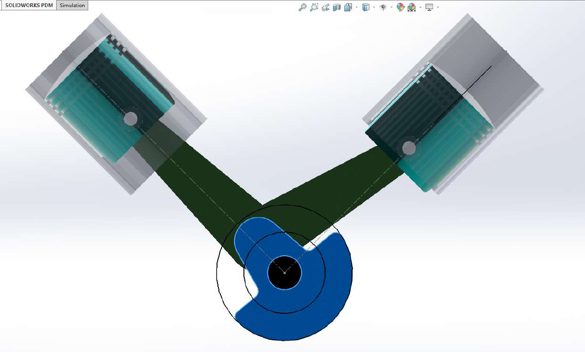

Dynamics of Machinery
Kinematic SVAJ Optimization
V90 Twin Cylinder Pump
A purely kinematic design of a 90 degree twin cylinder pump for 10 L/s at 10 bar. I swept 31 crank radii, 5 drive speeds, and 8 link ratios in MATLAB, which is 1,240 geometries, then filtered down to 291 that met every hard constraint using a weighted scoring function.
✦Result: the top design cut peak piston acceleration by 76% and velocity by 52% against the baseline, and matched my SolidWorks Motion check within 0.2%.